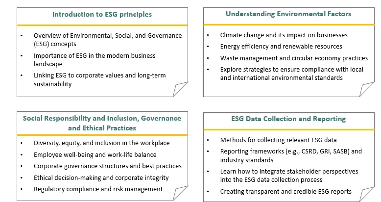

The business landscape is rapidly evolving and the integration of ESG principles has become a critical factor for organizational success. A recent Deloitte survey shows that 50% of leaders admit having already initiated employee trainings on sustainability and climate change. Further, 41% admitted that they are planning to begin ESG trainings within the next two years. This highlights the growing importance of significant ESG factors in building companies' long-term success and resilience.
As companies seek to address critical societal and environmental challenges, integrating ESG principles into their operations and culture is not only viewed as a strategic imperative but as a key driver for innovation, competitive advantage, and stakeholder trust.
Here's how the ESG training benefits both employees and organization as a whole
-
Equipping for Resilience
ESG training is the cornerstone of building organisational resilience an excellent ESG performance depends on a deep comprehension of its complex elements by giving employees the skills to recognise, evaluate, and ability to identify potential risks, such as supply chain vulnerabilities, regulatory non-compliance. ESG training is needed for keeping pace with evolving sustainability standards and reporting requirements. ESG-trained employees can lead transformative initiatives, driving positive impact and maintaining long-term resilience.
-
Driving Sustainable Practices
Organisations that receive ESG training have an efficient and resource-optimized business environment. Employees who grasp sustainability ideas are better able to identify opportunities for resource optimisation, waste reduction, and cost reductions. Organisations may achieve sustainable growth by seamlessly incorporating ESG issues into their daily operations, resulting in enhanced operational efficiency.
-
Fostering Collaborative and Innovative Solutions
By pursuing ESG trainings, organisations may foster a collaborative knowledge of sustainability goals among their internal and external stakeholders. Employees with ESG training drives a significant ESG initiatives with a wide range of stakeholders, from communities and regulatory bodies to investors and customers, through the development of a collaborative approach. Such collaborative efforts not only strengthens transparency and credibility but also facilitate the co-creation of innovative solutions to critical sustainability challenges.
-
Amplifying Brand Value
In a times where corporate reputation is closely linked to sustainability performance, ESG training emerges as a effective tool for strengthening brand value. Setting ESG goals and driving initiatives not only bring values in employees but also fulfil consumer expectations. The research shows that 83% of consumers give credit to companies should actively shape ESG best practices, with 80% admits they are more likely to purchase a products from environmentally conscious companies.
Companies can improve their reputation as responsible corporate citizens and ethical stewards of the environment by fostering a strong commitment to ESG principles across the organization. Moreover, ESG-trained employees represent the organization's values and commitment to sustainability, thereby establishing trust among stakeholders.
ESG training is not a passing trend but a continuing shift in business landscape
As the world facing with the alarming climate change warnings and the continuing efforts to meet the Paris Agreement goals, it's apparent that the current workforce is facing a significant gap in sustainability skills and trust in their companies owing to lack of knowledge. Over 80% of global workers aim to support sustainability efforts, with 3 in 5 eager to integrate sustainability into their current roles and 94% indicating inadequate investment in sustainability training for existing employees. Businesses can bring this anticipation by providing training to upskill current employees and aligning with their passions.
As organizations navigate the complexities of sustainability, investing in ESG training is essential for long-term viability and competitiveness.
ecoPRISM empowers companies in their ESG journey!
At ecoPRISM, we provide a comprehensive ESG trainings designed to empower your organization for a sustainable tomorrow. Our expert trainers bring authentic knowledge to the table, ensuring that you receive the most cutting-edge knowledge through rapid learning techniques. Whether dealing the multifaceted of climate change and risk management or embracing transparent sustainability reporting, our interactive and tailored content ensure that will provide a actionable insights to integrate ESG principles effortlessly into your business operations.

Join us on this journey towards a more resilient and sustainable future!